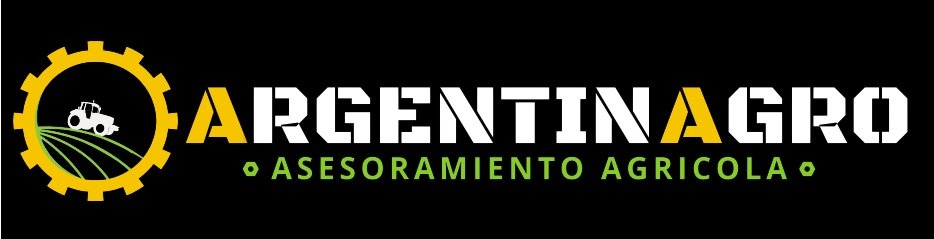

VERSIÓN DE PRUEBA · las lecturas sí se guardan en la planilla real

…
Cargar
Pozos
Mapa
Historial
Freatímetros · Ingreso
Se hace una sola vez en este teléfono, con señal.
Operador
Cargando nombres…
PIN
Ingresar
1 · Elegí el freatímetro
2 · Lectura de napa
Fecha
Lectura de la vara (m)
Lo que marca la vara de la boya a ras de la boca del caño
Profundidad real de napa
–
Lluvia desde la última lectura (mm)
Pluviómetro del pozo. Vacío si no hay pluviómetro; 0 si no llovió
3 · Estado del lote
Forma de siembra
Cultivo
Fecha de siembra (FS)
+ Agregar un cultivo a la lista (ej. cultivo de servicio)
Nombre
Escala fenológica
Es cultivo de servicio (suma el estadio "Secado")
Agregar a la lista
Estadio fenológico
✂️ Con
Corte
se da por terminado el cultivo de servicio: al guardar, el lote vuelve a barbecho.
IAF – índice de área foliar (0 a 10)
Cuánto cubre el cultivo con hojas verdes: 0 = sin hojas verdes (recién sembrado sin emerger, o cultivo terminado: corte o madurez), 1 = recién emergido, 10 = cubre todo el entresurco
Malezas
Tamaño y cantidad de malezas vivas
Verde activo
Superficie verde transpirando (malezas o cultivo)
Cobertura de rastrojo
Suelo tapado por residuos secos
Observaciones
Guardar lectura
< 1 m anegamiento
1–1,5 alta
1,5–2,5 óptima
2,5–3,5 aporte bajo
> 3,5 sin aporte
Cargando mapa…
🧭 Centrar en mí
🗺️ Ver todos
< 1 m
1–1,5
1,5–2,5
2,5–3,5
> 3,5 / sin dato
Actualizar ahora
Descargar copia (CSV)
Cerrar sesión en este teléfono